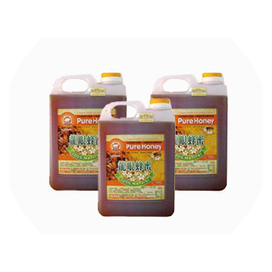
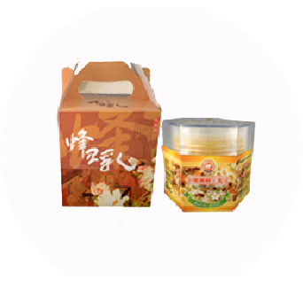
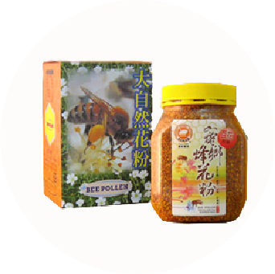
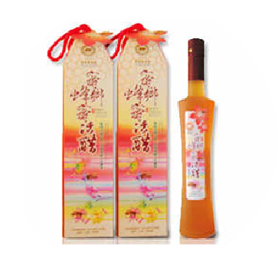
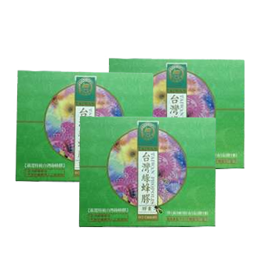
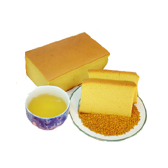
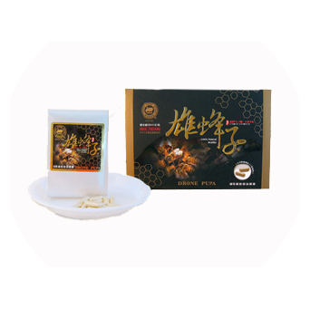

蜂產品系列
蜂產品系列


天然蜂蜜
關於蜂蜜
本園蜜蜂採收後，不定期檢驗，證實為無抗生素殘留、無污染物、合乎國家標準。（本園生產高品質的蜂產品是蜜鄉對客戶誠信的保証）
保存方式
1. 保存期限一年。
2.中、小包裝適合直接淋於水果,土司表面.有效日期標示於盒蓋內
3.請於保存期限內食用。
4.100%純正蜂蜜,蜜鄉信譽保證。
5.純正蜂蜜,因葡萄糖成分高，遇冷(約13℃以下)或置於冰箱會結晶，這是正常物理現象，
並不影響蜂蜜品質，請安心食用。
並不影響蜂蜜品質，請安心食用。
食用方法
食用蜂蜜時用溫開水沖服即可，不能用沸水沖，更不宜煎煮；每天睡覺前口服1湯匙蜜糖(加入1杯溫開水內)，可以幫助儘快進入夢鄉；蜂蜜是一種甜味劑，甜度超過砂糖，而且呈黏稠的液態，可塗在糕點、餅乾和麵包上食用。
關於蜂王漿
蜂王乳中含大量水溶性維生素，以B1、B2、B6、B12等B族含量最多，其中又以B1含量最豐富，維生素B族可促進體內蛋白質、脂肪、醣類等三大營養素的消化及吸收。
保存方式
1. 保存期限一年。
2.
製造日期標示於盒蓋內；保存期限標示於盒底。
食用方法
請於保存期限內食用，蜂王漿在食用時加入蜂蜜的目的，除較可口外，同時可防止蜂王漿在胃液中變質，影響效用。

天然蜂王乳

天然花粉
關於花粉
花粉中含有大量人體所需的各種有效成分，是人類完美的純天然營養佳品。花粉富含蛋白質、碳水化合物、脂類、核酸、礦物質、維生素和其他活性物質，如氨基酸、抗菌素等，是一種理想的滋補品，並具有一定的輔助治療作用。
保存方式
1. 保存期限一年。
2.
製造日期標示於盒蓋內；保存期限標示於盒底。
食用方法
可將花粉與蜂蜜混合後用溫開水沖服；
也可將蜂花粉磨細成粉末，用時按量以溫開水或與蜂蜜水一起沖服，均可收到滿意的效果。
關於蜂蜜醋
生機飲食健康追求，精選台灣頂極甘醇蜂蜜釀製，遵循傳統釀醋工法，經繁複自然發酵，糖化、酒化，加入活躍菌種至醋化過程後，耐心靜置一
年等待熟化醞釀始成為之，過程完全不添加酒精製造，蜂蜜醋自然純熟風味，更被視為養生追求者的最佳健康飲品。
保存方式
製造日期標示於盒蓋內；保存期限標示於盒底。
食用方法
可直接以冷開水或冰塊稀釋飲用，冰涼或加入生機飲料中更見風味。

蜂蜜醋

蜂膠
關於蜂王漿
蜂王乳中含大量水溶性維生素，以B1、B2、B6、B12等B族含量最多，其中又以B1含量最豐富，維生素B族可促進體內蛋白質、脂肪、醣類等三大營養素的消化及吸收。
保存方式
1. 保存期限一年。
2.
製造日期標示於盒蓋內；保存期限標示於盒底。
食用方法
請於保存期限內食用，蜂王漿在食用時加入蜂蜜的目的，除較可口外，同時可防止蜂王漿在胃液中變質，影響效用。
保存方式
保存期限7天需冷藏。製造日期標示於盒蓋內；保存期限標示於盒底， 請於保存期限內食用。
食用方法
可直接 搭配茶品食用，冰涼後食用更見風味。

蜂蜜蛋糕

蜂子
保存方式
製造日期標示於盒蓋內；保存期限標示於盒底， 請於保存期限內食用。
蜂產品系列